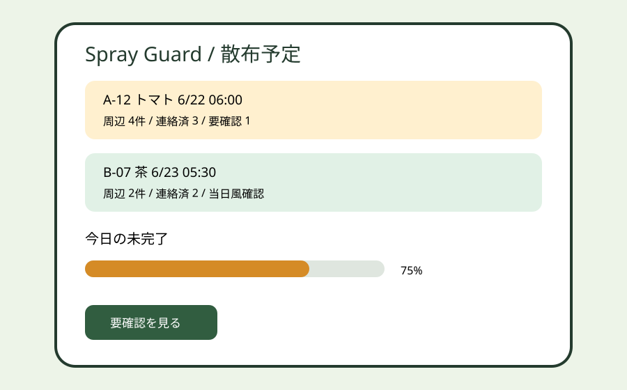
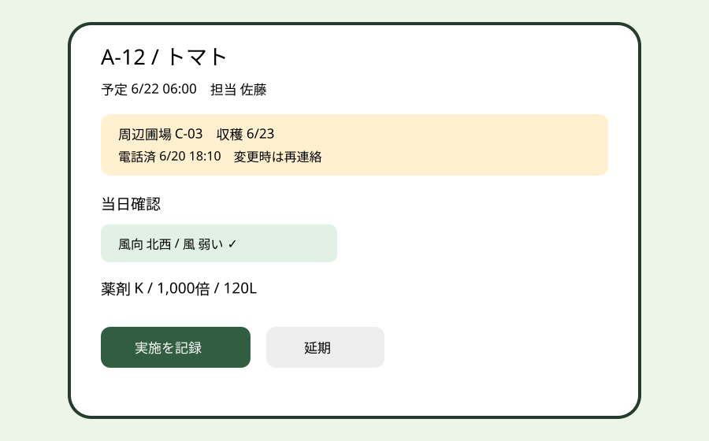

Question Note
農薬散布の周辺連絡と飛散対策記録を閉じるサービス案


全体像
農林水産省は、農薬飛散を防ぐため地域の連絡体制を整え、周辺農作物の栽培者へ目的・日時・薬剤を事前連絡し、風の強さ、場所、作物、薬剤、使用量等を記録するよう示しています。小規模産地では圃場図、電話、天気画面、紙の使用記録が分かれ、誰に連絡済みかと当日の判断根拠が残りにくい点を切り出します。
診断や散布可否を自動決定せず、計画 → 周辺圃場確認 → 事前連絡 → 当日気象確認 → 実施記録 → 飛散時の連絡を一件で閉じます。
対象と既存手段の限界
| 利用者 | 課題 | 既存手段の限界 |
|---|---|---|
| 共同防除組織 | 複数圃場の予定調整 | 紙地図では境界と担当変更が同期しない |
| 生産者 | 周辺作物と収穫期の確認 | 電話・チャットでは未回答者を一覧化できない |
| JA・指導担当 | 実施根拠と事故時経緯 | 表計算は添付、監査履歴、再通知が弱い |
サービス案と中心ワークフロー
- 圃場境界、栽培作物、周辺連絡先を本人確認の上で登録する。
- 散布目的、予定日時、薬剤、方法を入力し、影響候補の周辺圃場を表示する。
- 担当者が連絡対象を確定し、メールまたは電話結果を記録する。
- 当日に風向・風速を手入力確認し、延期または実施を人が判断する。
- 使用量・希釈倍数・実施者を保存し、事故時は関係者への連絡履歴を残す。
地図は境界候補の把握だけに使い、農薬登録、ラベル、現地条件と指導機関の判断を優先します。
100万円規模の収益
共同防除組織、少量多品目の生産者団体へ直接営業し、16組織 × 月額5,000円 × 12か月 + 導入支援60,000円 = 売上1,020,000円。初年度に紹介で接触できる40組織中16組織を到達可能市場とします。
システム要件
- 組織・圃場・担当者別権限、操作監査、連絡先の最小保持
- 圃場ポリゴン、隣接候補、作物・収穫時期、予定の重なり表示
- 連絡状態、当日確認、延期理由、散布内容、事故時履歴
- オフライン一時保存、CSV出力、判断を代替しない警告表示
AWSシステム要件と支出
東京リージョン、無料枠・クレジット除外、1 USD = 155円の概算です。実装前にAWS Pricing Calculatorで再計算します。
| AWS | 用途 | 想定 | 月額 | 年額 |
|---|---|---|---|---|
| S3 + CloudFront | Web配信・添付記録 | 20GB、月5万配信 | 1,200円 | 14,400円 |
| Cognito | 組織・生産者認証 | 350 MAU | 900円 | 10,800円 |
| API Gateway | 圃場・計画・連絡API | 月25万req | 800円 | 9,600円 |
| Lambda | 隣接候補、期限、通知処理 | 月25万実行 | 1,100円 | 13,200円 |
| DynamoDB | 組織、圃場境界、作物、散布計画、周辺対象、連絡状態、当日気象、薬剤・希釈倍数・使用量、延期理由、事故・監査履歴 | 8万件、on-demand | 2,000円 | 24,000円 |
| SES | 散布前通知・変更通知 | 月6,000通 | 1,000円 | 12,000円 |
| CloudWatch | API・通知失敗監視 | 月5GB | 1,200円 | 14,400円 |
| AWS Backup | 設定・記録保全 | 月25GB | 800円 | 9,600円 |
| AWS Budgets | 予算超過通知 | 2予算 | 200円 | 2,400円 |
| Route 53 | 独自ドメインDNS | 1 zone | 100円 | 1,200円 |
| Amazon Location Service | 圃場と隣接候補の地図表示 | 月3万tiles・1万検索 | 1,500円 | 18,000円 |
| 合計 | AWS利用料 | 10,800円 | 129,600円 | |
開発、人員、利益
AIでCRUD、通知文、地図入力、テストの初稿を作り、要件2週、試作3週、本実装5週、現地検証3週の13週。1人が開発・営業・導入を担い、農薬適正使用レビュー12万円、GIS設計8万円、セキュリティ診断10万円を外注します。
初年度支出はAWS 129,600円、ドメイン3,000円、外注300,000円、営業・運営180,000円、予備費80,000円の計692,600円。売上 - 支出 = 利益より1,020,000円 - 692,600円 = 327,400円です。
最初の実証とリスク
1組織・10圃場で過去の散布計画を再現し、連絡対象確定時間、未回答件数、記録作成時間を比較します。境界誤認、気象情報への過信、誤った安全保証が主リスクです。本人確定、現地手入力、ラベル・行政指導優先、最終判断者表示を必須にします。